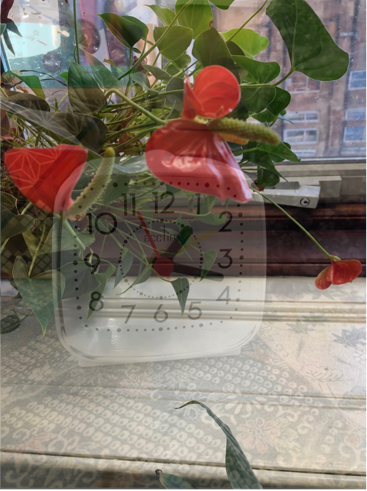

Rosie Roberts is an artist, writer and filmmaker based in Glasgow. Her research surrounds the poetic haptics of everyday occurrence, documentary, speculative writings and relevance/commons/locality.
Recent Work
MAP Collaboration with Alison Scott